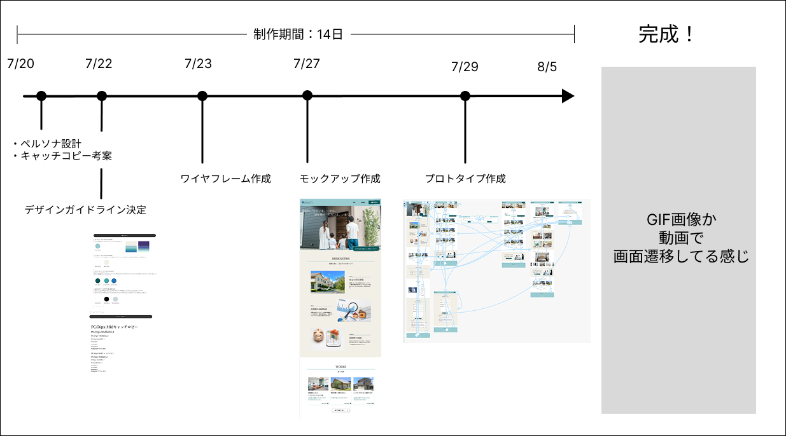
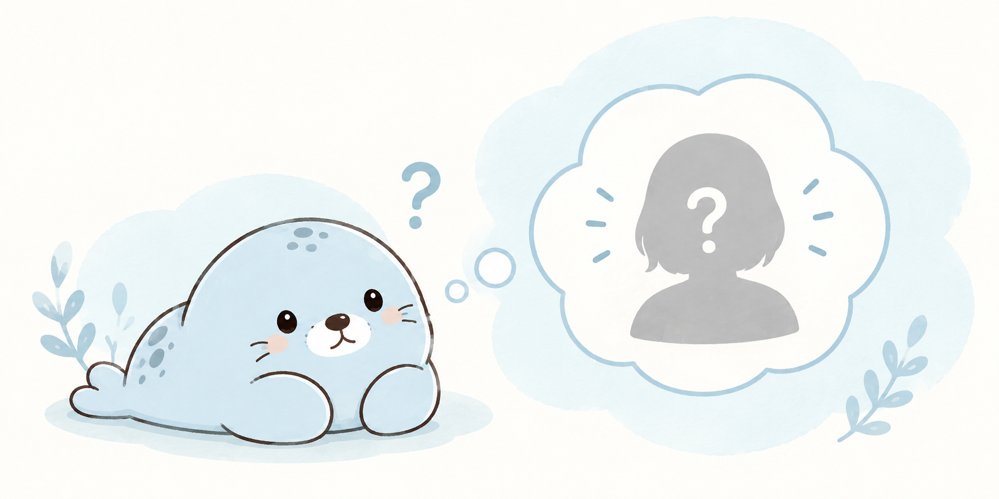
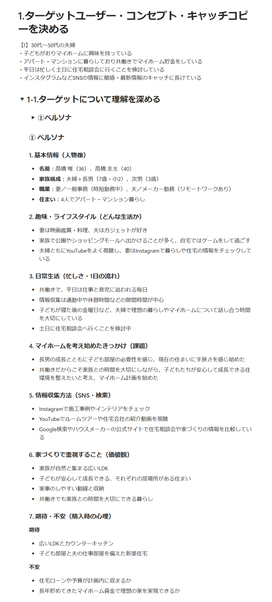
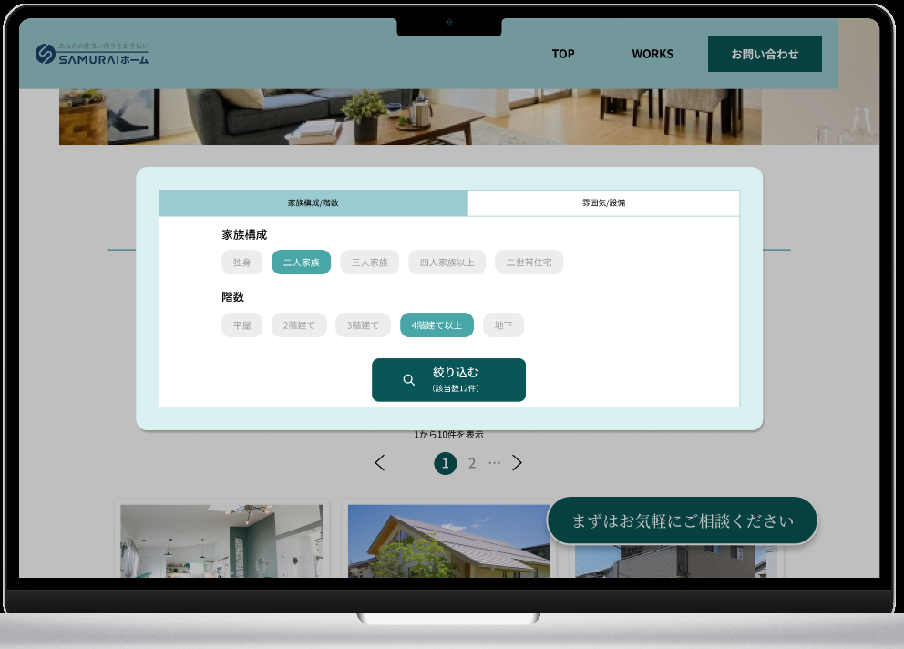
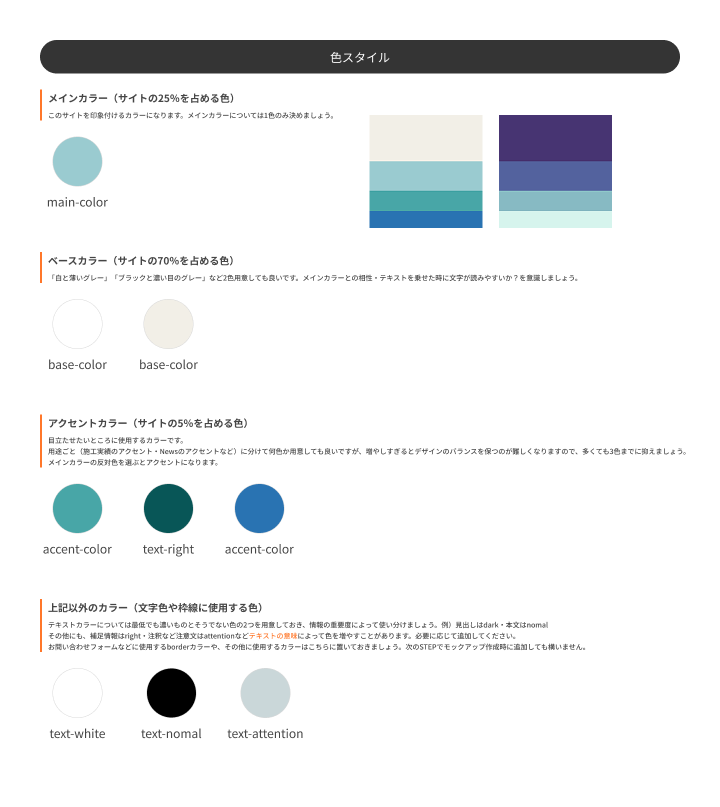
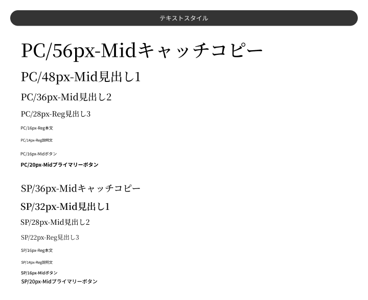
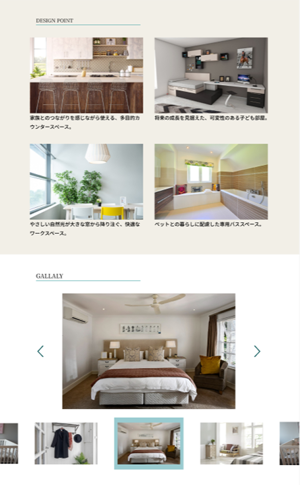
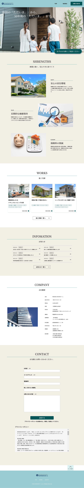
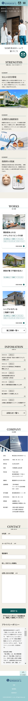

WORKS-7 / NEW DETAIL PAGE
ハウスメーカーサイト
子供を想う夫婦が「マイホーム相談をしてみよう！」と、思えるようなサイトのデザインカンプを制作しました。

作品概要
- クライアント
- 架空のハウスメーカー
- 依頼内容
- コーポレートサイトのデザインカンプ4ページ（トップ、実績一覧、実績詳細、お問い合わせ完了）
- 制作目的
- Webを通した新規顧客の獲得、お問い合わせ数の増加、自社製品の認知度と信頼度向上
- ターゲット
- 子供がおりマイホームに興味を持っている、
共働きの30~50代夫婦
SNSで情報で収集しており、土日に住宅相談会に行くことを検討している
この作品ができるまで

こだわりポイント
01. ユーザー理解と作業療法
UI/UXについて学んだ際に知ったペルソナ設計の項目を参考に、基本情報だけでなく、経済状況や趣味、1日の流れ、忙しさなど、インターネットでの調査と自身の想像力をもとに、できるだけ具体的に書き出しました。
価値観やハウスメーカーサイトに何を期待し、どのような不安を感じるのかも明確にすることで、その後のサイト設計に活かしました。
ユーザーについて考えることは、作業療法でクライアントの生活背景や価値観を捉えることに似ていると感じています。 作業療法で対象者の生活や思考、感情を想像するときと同じように、ユーザーの立場に立って「ハウスメーカーサイトに何を求めるだろう？」と想像することで、見えてくるものがありました。


02. サイト目的から考えた施工実績の絞り込み機能
サイトの目的である「お問い合わせ」を、ユーザーはどのような理由や流れで行うのかを考えました。
ユーザー理解をベースに想像し、「自分たちの理想のマイホームに似た施工実績があるから、このハウスメーカーに話を聞きたい」となるのではないかと考えました。
そこで、Figmaのプロトタイプにて、施工実績一覧ページで「気になる物件に絞り込む」というアクションを行えるよう、絞り込みモーダルを追加しました。 このように、常にサイトの目的に紐づけてデザインを考えることを大切にしています。

デザインについて
色
依頼内容に希望する色・イメージとして「青系or緑系、シンプルな色使い、落ち着いた色調」と記載がありました。
家の素材には木が使われているため、自然を連想できる色として緑を選びました。
また、子どもを思う家族がターゲットであることから、落ち着きはありつつも子どもにも親しみやすい、パステル調のやわらかい緑を意識しました。
一度メインカラーを仮決めした上で、モックアップ制作の段階で、ロゴやメインビジュアルとのバランスを見ながらメインカラーを調整しました。
その上でアクセントカラーは、**黒文字・白文字のそれぞれと組み合わせた際の視認性**を意識して、色相は大きく変えずに彩度と明度を調整し、メインカラーとの相性も考慮しながら決定しました。

フォント
洗練された上質な雰囲気を表現するため、コピーや大きな見出しには明朝体を採用しました。
一方、本文やカード内の小さめの見出しには、可読性を優先してゴシック体を使用。デザイン性と読みやすさのバランスを考え、用途に応じてフォントを使い分けました。

レイアウト
希望するイメージにあった「洗練されたクリーンな雰囲気」を表現するため、余白の取り方や間隔に統一感を持たせることを意識しました。
ワイヤーフレームの段階で必要な情報をすべて整理した上で、全体のバランスを確認しながら、見出し下のラインなどのあしらいを追加しました。
また、実績紹介ページでは写真の配置にこだわりました。スクロール量が多いページは、最後まで見てもらえない可能性があると考え、ページの縦幅をなるべく増やさず、かつ写真を大きく見せられるようカルーセルを採用しました。

使用技術 Figma
Figmaで参考サイトやコンポーネントをまとめ、ワイヤーフレームからプロトタイプまで作成しました。
プロトタイプの想定ユーザーフロー
当時の技術でできるところまでの表現で以下のユーザーフローを想定してプロトタイプを作成しました。
1. TOP画面の「実績一覧へ」またはヘッダーの「WORKS」を押下し、実績一覧画面へ遷移
2. 「タブで絞り込む」を押下
3. 絞り込みモーダルで「四人家族以上」「3階建て」を選択し、「絞り込み」ボタンを押下
4. 絞り込み結果画面へ遷移し、選択した条件が反映された状態を確認
5. 一番上の実績カード「開放感あふれるナチュラルリビングの家」を押下し、実績詳細画面へ遷移
6. ヘッダーの「お問い合わせ」またはフロートボタン「まずはお気軽にご相談ください。」からお問い合わせ画面へ遷移
7. 「送信」ボタンを押下し、お問い合わせ完了画面へ遷移
8. 「TOPに戻る」ボタンを押下し、TOP画面へ戻る
サイト全体

